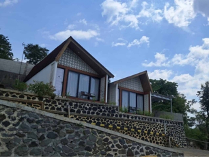

Destinasi
Wisata
Tempat-tempat yang wajib dikunjungi wisatawan
karena keindahan alam, budaya, sejarah, atau hiburannya.
Bengkelung Park
Desa Sidoharjo, Kecamatan Doro
#1 Destinasi wisata alam yang memukau dengan paduan keindahan alam dan budaya lokal. Dikelola oleh pemuda setempat, tempat ini menawarkan panorama air terjun mini, sungai jernih, dan dinding bebatuan alami yang menawan.
Black Canyon
Kecamatan Petungkriyono
#2 Destinasi wisata yang sungguh mempesona. Sebuah kedung berundak yang diapit oleh tebing-tebing batu warna hitam menjulang tinggi, membuat siapapun akan terpukau melihat keindahan alam ini.
Lolong Adventure
Kecamatan Karanganyar
#3 Pesona Wisata Lolong Adventure di Pekalongan memang sudah tidak perlu diragukan lagi, dan banyak wisatawan asal Pekalongan dan sekitarnya yang menghabiskan liburannya disini.Kabupaten Pekalongan masih terkenal dengan keindahan alamnya yang masih cukup asri, Kabupaten Pekalongan juga memiliki sederet wahana wisata dengan daya tarik yang beragam, mulai dari curug atau air terjun, puncak gunung, perbukitan hingga wahana arung Jeram.
Curug Bajing
Kecamatan Petungkriyono
#4 Di tempat ini, wisatawan bisa memanjakan mata dengan menikmati keindahan air terjun dan alam sekitarnya.Tak hanya menjadi tempat untuk menikmati keindahan alam, curug ini juga menawarkan wahana permainan water sliding yang menarik bagi para wisatawan. Water sliding bahkan menjadi wahana yang paling diminati oleh wisatawan.
Curug Bidadari Jolotigo
Kecamatan...
#5 Salah satu wisata yang populer di kalangan pencinta alam, terutama anak muda. Curug ini juga punya nama lain, yaitu Curug Batu Dinding Kolam Lima.Bukan tanpa alasan, ini karena terdapat lima aliran air di sekitar air terjun yang mirip dengan kolam renang. Inilah daya tarik utama dari destinasi wisata tersebut. Selain itu, ada dua kolam dengan kedalaman masing-masing 4 meter dan 7 meter.
Curug Jlarang
Kecamatan LebakBarang
#6 Curug Jlarang dibuka secara resmi pada 2017. Panorama di sepanjang jalan, mampu menyegarkan mata usai melewati akses jalan rusak. Pemandangan macam persawahan dan hutan menjadi salah satu yang khas. Selain itu pemadangan pedesaan di bawah jurang menjadi salah satu spot menarik. Tetapi jangan sampai pemandangan cantik ini mengalihkan fokus anda berkendara. Jika ingin melihat lebih dekat, anda dipersilahkan menepi sembari menikmati pemandangan ini.
Curug Lawe
Kecamatan Petungkriyono
#7 Wisata curug yang satu ini berada di kawasan Petungkriyono yaitu di Dusun Cokrowati, Desa Kasimpar, curug ini memiliki ketinggian sekitar 100 meter.Spot-spot yang keren dan instragamle banget menjadikan lokasi objek wisata Curug Lawe ini mulai banyak diminati dan dikunjungi oleh para wisatawan. Ditambah dengan fasilitas disini sudah dirasa cukup memadai. Oleh pengelola kawasan wisata ini dibangun dan dikelola secara baik sudah ada toilet serta warung-warung yang dibangun disekitar objek wisata ini.
Curug Madu
Kecamatan Doro
#8 Suguhkan berbagai pemandangan alam yang menyejukkan jiwa seperti air terjun, bebatuan, bunga-bunga indah, jembatan gantung, sungai jernih yang mengalir, danau my heart, kolam ikan, berbagai spot foto yang instagramable dan sebagainya.
Curug Muncar
Kecamatan Petungkriyono
#9 Curug ini berada di lereng Gunung Rogojembangan dengan ketinggian 1.249 mdpl. Rute menuju curug muncar cukup mudah dengan kondisi jalan yang cukup baik. Untuk sampai di lokasi Curug Muncar dibutuhkan waktu tempuh selama kurang lebih 2 jam dari Kota Pekalongan. Selama perjalanan menuju objek wisata ini, wisatawan akan disuguhi dengan pemandangan yang luar biasa indahnya. Di kawasan curug juga telah tersedia beragam fasilitas, seperti camping ground, pendopo, dan tempat bermain.
Curug Siwatang
Kecamatan Kandangserang
#10 Sebuah air terjun yang menawarkan pesona alam dengan suasana yang masih alami. Air terjun ini dikelilingi oleh hutan hijau yang asri, memberikan kesejukan bagi para pengunjung yang ingin melarikan diri dari hiruk-pikuk kota. Gemercik air yang jatuh dari ketinggian menciptakan suasana tenang yang cocok untuk relaksasi. Di sekitar curug terdapat area tempat duduk alami yang memungkinkan pengunjung menikmati pemandangan atau bersantai dengan keluarga dan teman.
Kalipahingan
Kecamatan Paninggaran
#11 Terkenal dengan aliran sungainya yang jernih serta pemandangan hijau di sekelilingnya. Tempat ini menjadi pilihan menarik bagi para pencinta alam dan petualangan karena menyediakan aktivitas seperti river tubing dan camping. Salah satu daya tariknya adalah jembatan gantung yang melintasi sungai, memberikan pengalaman unik bagi para wisatawan yang ingin menikmati keindahan alam dari ketinggian.
Linggo Asri
Kecamatan Kajen
#12 Destinasi wisata yang menawarkan kombinasi alam dan edukasi di Pekalongan. Tempat ini berada di kawasan pegunungan sehingga udara di sini selalu sejuk. Wisatawan dapat menikmati berbagai wahana yang tersedia, seperti Mini Zoo, taman tematik, serta Mini World yang memberikan pengalaman unik menjelajahi berbagai replika bangunan terkenal dari berbagai negara. Linggo Asri menjadi tempat yang ideal untuk rekreasi keluarga maupun aktivitas edukatif bagi anak-anak.
Pantai Sunter Depok Indah
Kecamatan Siwalan
#13 Destinasi yang cocok bagi wisatawan yang ingin menikmati keindahan laut dan angin sepoi-sepoi. Pantai ini memiliki pasir hitam yang lembut serta ombak yang relatif tenang, sehingga aman untuk berbagai aktivitas seperti bermain pasir, berenang, atau sekadar bersantai di tepi pantai. Wisatawan juga dapat menikmati pemandangan matahari terbenam yang memukau, menjadikan tempat ini pilihan menarik bagi mereka yang ingin menikmati suasana romantis atau bersantai dengan keluarga.
Pantai Wonokerto
Kecamatan Wonokerto
#14 Wisata pantai ini menawarkan garis pantai yang luas dengan pasir yang bersih dan area pohon cemara yang memberikan keteduhan alami. Ombak yang relatif tenang memungkinkan pengunjung untuk bermain air atau sekadar berjalan-jalan menikmati suasana laut. Salah satu keunggulan Pantai Wonokerto adalah panorama matahari terbenam yang begitu indah, menjadikannya tempat yang ideal bagi para fotografer maupun wisatawan yang ingin bersantai.
Sikujang
Kecamatan Kandangserang
#15 Tempat wisata alam yang menawarkan keindahan sungai alami dengan air yang jernih. Suasana tenang dan udara segar membuat tempat ini cocok untuk relaksasi atau piknik bersama keluarga. Selain menikmati gemercik air sungai, pengunjung juga bisa melihat fish garden. Dengan latar belakang pepohonan hijau dan udara sejuk pegunungan, Sikujang menjadi destinasi yang pas bagi mereka yang ingin menikmati ketenangan dan keindahan alam.
Ciblon Si Gesing
Kecamatan Kesesi
#16 Ciblon Si Gesing adalah pilihan pas untuk rekreasi keluarga dan pecinta alam di Pekalongan: wisata air murah meriah, pemandangan indah, fasilitas memadai, dan banyak kegiatan seru seperti perahu dan memancing. Cocok sebagai destinasi santai yang mudah dijangkau dari pusat Kajen atau Kesesi.
IBC
Kecamatan Wiradesa
#17 Ikon batik Kabupaten Pekalongan dengan konsep terpadu perdagangan, edukasi, dan wisata budaya. Meskipun potensinya besar, perlu perbaikan strategi promosi dan manajemen agar kembali ramai dan berfungsi optimal sebagai pusat batik nasional.
Kolam Renang Al Kautsar
Kecamatan Karanganyar
#18 Menawarkan pengalaman santai dan menyenangkan untuk keluarga dengan anak-anak: air jernih, fasilitas lengkap, serta nuansa alam dari bekas tambang yang cantik. Harga terjangkau dan lokasinya mudah dijangkau dari kota Pekalongan.
Kolam Renang Kulu Asri
Kecamatan Karanganyar
#19 Destinasi air ramah keluarga di Pekalongan: dua kolam bergaya resor, area pemancingan dengan ikan bakar segar, serta fasilitas lengkap yang menunjang kenyamanan. Suasana alam sejuk dan harga terjangkau membuatnya ideal untuk liburan akhir pekan bersama keluarga atau komunitas.
Kolam Renang Prima Graha
Kecamatan Karanganyar
#20 Menawarkan paket lengkap untuk rekreasi keluarga: harga bersahabat, wahana menyenangkan untuk semua usia, suasana asri, serta fasilitas pendukung yang memadai. Cocok untuk berenang santai, piknik, memancing, atau hiburan akhir pekan. Perbaikan fasilitas sederhana bisa lebih meningkatkan pengalaman pengunjung.
La’ranch
Kecamatan Karanganyar
#21 Pilihan tepat untuk staycation keluarga, pasangan, atau teman yang ingin kombinasi penginapan mewah dan petualangan di alam. Harga bersahabat, banyak aktivitas edukatif & rekreasi, suasana alami, serta akses mudah dari kota. Cocok juga untuk acara komunitas, gathering, atau foto pra-nikah dengan konsep kreatif.
Pasar Kuliner Rindu Semilir
Kecamatan Kajen
#22 Pasar Rindu Semilir menghadirkan pengalaman kuliner tradisional yang autentik dan asri di jantung kota Pekalongan. Dengan nuansa hutan, atmosfer keluarga, dan koin kayu yang unik, pasar ini jadi destinasi yang pas untuk nongkrong pagi, mencicipi jajan tempo dulu, sambil mendukung UMKM lokal dan pelestarian lingkungan.
Kolam Renang Banyu Biru
Kecamatan Wiradesa
#23 Destinasi rekreasi air ramah keluarga di Pekalongan: wahananya lengkap (anak & dewasa), fasilitas memadai, harga murah, dan lokasi strategis. Cocok untuk santai, olahraga, atau bermain air.
Kampung Batik Wiradesa
Kecamatan Wiradesa
#24 Destinasi wisata budaya dan kerajinan yang autentik: kaya sejak tradisi membatik turun-temurun, edukatif bagi wisatawan, sekaligus mendukung keberlanjutan lingkungan dan ekonomi lokal. Cocok dikunjungi untuk belajar batik langsung dari pengrajin dan membawa pulang karya berkualitas khas Pekalongan.
Kuda Kepang
#25 Representasi kuat akar budaya Pekalongan: paduan antara ritual, musik, tari, dan magis. Menyaksikan pementasannya berarti mengikuti jejak tradisi kuno—sekaligus bagian pelestarian warisan budaya tak benda yang dinamis dan menyentuh. Cocok disaksikan di acara lokal agar generasi muda bisa memahami wakil asli seni rakyat ini.
Nyadran Tlogo Mangunan
Kecamatan Petungkriyono
#26 Tradisi budaya dan keagamaan yang berakar dalam kearifan lokal Pekalongan: menyatu dengan alam telaga, dipenuhi makna leluhur, dan menjaga keseimbangan spiritual. Ritual ini tidak hanya sakral tapi juga menawarkan pengalaman visual dan spiritual yang mendalam.
Sedekah Laut
Pelabuhan Perikanan Pantai (TPI) Kecamatan Wonokerto
#27 Perpaduan ritual spiritual, budaya rakyat, dan perayaan komunitas nelayan Pekalongan. Melalui pelarungan sesaji, pertunjukan seni, dan lomba tradisional, acara ini memperkuat rasa syukur, solidaritas sosial, dan identitas budaya pesisir. Cocok dikunjungi jika kamu ingin merasakan langsung atmosfir ritual yang sakral sekaligus meriah.
Kuntulan
Tradisi khas pesisir Pantura, termasuk Pekalongan
#28 Perpaduan harmonis antara bela diri, tarian, dan musik religius—menggambarkan identitas masyarakat pesisir Pekalongan. Selain atraktif, ia sarat nilai sejarah, sosial, dan spiritual. Cocok untuk disaksikan di acara tradisional lokal.
Makam Habib Abu Bakar bin Thoha bin Yahya
Kecamatan Karanganyar
#29 Tempat ziarah religi dan spiritual di Pekalongan, dipenuhi sejarah dakwah, suasana teduh dan kolam gazebo yang menyejukkan, serta menjadi pusat kegiatan keagamaan dan haul. Cocok juga sebagai lokasi untuk refleksi dan belajar sejarah Islam lokal.
Makam Ki Gede Penatas Angin
Kecamatan Doro
#30 Destinasi religi dan sejarah yang menyatu dengan alam serta nilai spiritual. Layak dikunjungi oleh peziarah dan penikmat warisan budaya Islam di Pekalongan. Cocok sebagai tempat ziarah, muhasabah, atau pelajaran sejarah islamisasi lokal.
Makam Wali Agung Rogoselo
Kecamatan Doro
#31 Salah satu situs religi dan kultural penting di Pekalongan, menyajikan kombinasi spiritualitas, arsitektur tradisional, dan lanskap bukit yang menyejukkan. Tempat ini sangat cocok untuk peziarah maupun penikmat sejarah Islam lokal.
Makam Mbah Gendon
Kecamatan Kesesi
#32 Makam Mbah Gendon bukan sekadar tempat peristirahatan ulama, tapi juga pusat spiritual dan folklore rakyat Pekalongan. Ziarah ke sana memberi pengalaman religi, belajar nilai keislaman lokal, dan merasakan nuansa mistis yang mengelilingi tokoh yang karismatik ini.
Makam Mbah Nurul Anam
Kecamatan Kedungwuni
#33 Situs ziarah religi penuh sejarah dan spiritualitas di Kabupaten Pekalongan. Dengan warisan dakwah, karomah, dan tradisi haul, tempat ini layak dimasukkan ke agenda kunjungan religi maupun wisata budaya lokal.
Makam Syekh Siti Jenar
Kecamatan Doro
#34 situs religius dan budaya yang sarat dengan atmosfer spiritual. Meski keabsahan historisnya masih diperdebatkan, makam ini menawarkan pengalaman ziarah mistis dan menghanyutkan—cocok bagi yang ingin meresapi aspek tasawuf dalam tradisi lokal Pekalongan.
Makam Wali Tandarun
Kecamatan Paninggaran
#35 Destinasi religi penting di Pekalongan: penuh sejarah, spiritualitas, dan kearifan lokal. Cocok untuk peziarah, pelajar budaya, ataupun wisatawan yang mencari pengalaman ziarah yang damai dan membumi.
Referensi
Wisata
Rekomendasi bagi para wisatawan
untuk mengunjungi beberapa tempat serta event tahunan yang dimiliki Kabupaten Pekalongan.
-

Rute Wisata Alam Petungkriyono – Rekomendasi Akomodasi di Filow Luxcamp
Jelajahi keindahan alam Pegunungan Petungkriyono, kawasan hutan hujan tropis yang asri dan cocok bagi pecinta alam. Rute dimulai dari Kota Pekalongan ke arah Petungkriyono, dengan destinasi seperti Curug Bajing, Tlaga Sigebyar, Black Canyon dan masih banyak lagi wisata alam yang ada di Petungkriyono. Setelah berpetualang, istirahatlah di Filow Luxcamp, glamping eksklusif di tengah alam dengan fasilitas modern dan panorama lembah yang menawan.
-

Rute Wisata Alam & Buatan: Jalur Pantura – Pantai Wonokerto – Pasar Rindu Semilir – Linggo Asri
Rute ini menggabungkan wisata alam dan buatan dari jalur Pantura. Mulai dari Pantai Wonokerto untuk menikmati sunrise dan aktivitas nelayan, lanjut ke Pasar Rindu Semilir yang estetik dan penuh kuliner lokal, lalu berakhir di Linggo Asri, kawasan pegunungan yang sejuk untuk piknik, outbound, atau menginap santai di cottage.
-

Rute Wisata Budaya: Sedekah Laut – Pantai Wonokerto – Menginap di Grand Dian Hotel Pekalongan
Rute budaya ini mengangkat tradisi Sedekah Laut di Pantai Wonokerto, prosesi larung sesaji yang disertai bazar rakyat. Setelahnya, wisatawan bisa menikmati kuliner seafood dan wisata bahari sekitar. Untuk bermalam, tersedia Grand Dian Hotel Pekalongan yang nyaman dan strategis dekat pusat kota dan pantai.
-

Rute Festival Kabupaten Pekalongan: Lolong Adventure – Festival Durian – La’Ranch Glamping
Rute ini memadukan serunya Lolong Adventure dengan arung jeram di Sungai Sengkarang, meriahnya Festival Durian Lolong saat musim panen, dan ditutup dengan menginap di La’Ranch Glamping, akomodasi bernuansa peternakan ala western lengkap dengan wahana keluarga.
-

Villa Linggo Indah
Kecamatan Mijen
Villa Linggo Indah, atau yang dikenal juga dengan nama Vila Banyumili, adalah bagian dari objek wisata Linggoasri di Pekalongan, Jawa Tengah. Tempat ini menawarkan penginapan (villa dan homestay), restoran, serta fasilitas rekreasi seperti kolam renang dan area bermain anak.
-
Grand Dian Hotel Pekalongan
Kecamatan Wiradesa
Grand Dian Hotel Pekalongan berada di Wiradesa. Tempat bermalam yang tepat bagi yang berlibur bersama keluarga. Terdapat restoran dan WiFi tersedia di seluruh area publik. Dengan fasilitas yang memadai, Grand Dian Hotel Pekalongan menjadi pilihan yang tepat untuk menginap.
-
La Ranch Glamping
Kecamatan Karanganyar
Penginapan alternatif serta destinasi wisata di Kabupaten Pekalongan yang unik, lengkap, dan nyaman. Menghadirkan sensasi glamour dan dekat alam dengan harga sangat bersahabat.
-
AH Homestay
Kecamatan Wonopringgo
AH Homestay berada di kawasan Kabupaten Pekalongan dan dikelola oleh keluarga lokal, menawarkan suasana menginap yang hangat dan akrab. Penginapan ini menghadirkan pengalaman budaya otentik seperti homestay lainnya di daerah ini.
-
Filow Luxcamp
Kecamatan Petungkriyono
Penginapan dengan konsep glamping yang mengusung tema bohemian. Anda dapat menikmati nuansa camping di tengah hutan pinus yang masih asri dengan fasilitas lengkap.
-
Wilow Coffee Camp
Kecamatan Petungkriyono
Willow Coffee Camp di Kabupaten Pekalongan adalah coffee shop unik di hutan pinus Luxcamp Petungkriyono, menawarkan pengalaman ngopi dan glamping yang menyatu dengan alam.
-
The Hope Heritage Cafe
Kecamatan Kajen
The Hope Heritage Café adalah pilihan ideal bagi pecinta kopi yang ingin menyatu dengan suasana alam Linggo Asri: udara sejuk, pemandangan hijau, dan cita rasa kopi lokal yang autentik, membuatnya layak dicoba saat berkunjung ke kawasan ini.
-
Klakon Pekalongan
Kecamatan Kedungwuni
Klakon dikemas sebagai pilihan utama bagi anak muda dan keluarga di Kedungwuni: konsep lengkap, atmosfer cozy, spot foto keren, fasilitas memadai, serta menu variatif. Sempurna untuk hangout santai atau kerja sambil ngopi.
-
Festival Durian
Perkiraan Pelaksanaan : Januari
Acara tahunan yang merayakan panen raya durian lokal dan menjadi ajang promosi potensi agrikultural daerah tersebut. Festival ini bukan hanya sekadar pesta durian, tetapi juga menjadi simbol identitas budaya dan kearifan lokal masyarakat Pekalongan.
-
Festival Gunungan Megono
Perkiraan Pelaksanaan : Sekitar H+7 Lebaran
Festival Gunungan Megono adalah acara tahunan di Kabupaten Pekalongan yang digelar di Linggo Asri, Kecamatan Kajen. Tradisi ini menandai rasa syukur atas hasil bumi dan sekaligus menyambut Syawalan.
Makna & Filosofi : Gunungan yang terdiri dari nasi megono dan hasil panen melambangkan rasa syukur, kesuburan tanah, toleransi, dan kebersamaan.